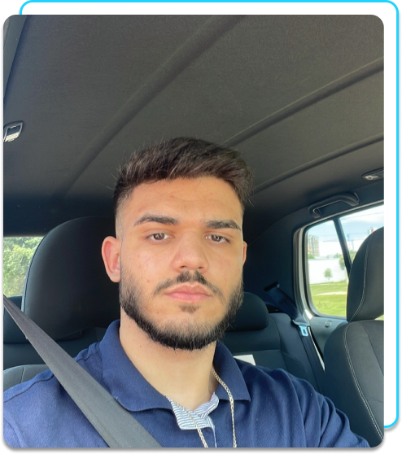

Experiências
-
Unisystem (2022 - 2023) - Responsável pela manutenção e desenvolvimento de ERP. Para tal, utilizei Delphi para os desenvolvimentos e manutenções, juntamente com banco de dados Oracle, mais especificamente PL/SLQ realizando consultas, inserções, update, criação de tabelas, joins e todas as atividades relacionadas a tecnologia Oracle de Banco de Dados relacionais.
-
Universidade Federal de Rondonópolis (2023 - Atual) - Desenvolvedor Full-Stack bolsista em um projeto de extensão, participei de todas as etapas relacionadas à criação de uma plataforma web. Trabalhei em conjunto com colegas e um professor orientador, realizando a modelagem do banco de dados, gerando os scripts necessários, e também contribuí na criação e implementação das regras do back-end, bem como na estruturação, estilização e manipulação (DOM, LocalStorage, montagem dinâmica, etc). Utilizei as seguintes ferramentas nesse projeto: HTML, CSS, JavaScript, Bootstrap, MySQL e Flask.
Estudos
-
Sistemas de Informação (Bacharelado) - UFR
mais sobre
-
Algoritmos e Lógica de Programação - Udemy
com certificado
-
FORMAÇÃO: Desenvolva aplicações Web com JavaScript - Alura
com certificado
-
FORMAÇÃO: A partir do zero: HTML e CSS para projetos web - Alura
com certificado
-
Scrum: agilidade em seu projeto - Alura
com certificado
-
Banco de dados Oracle - PL/SQL
